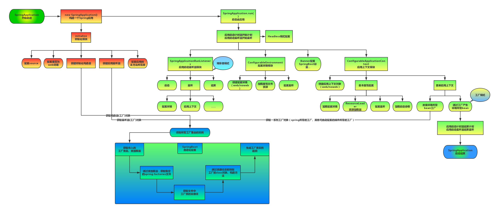
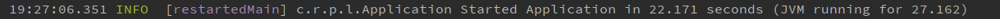
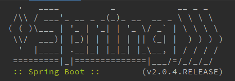
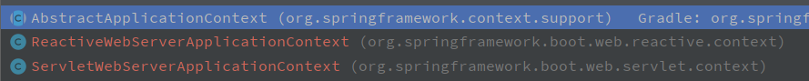

SpringBoot启动过程流程图如下：

先来看下SpringBoot项目的启动类：
@SpringBootApplicationpublic class SpringDemoApplication {public static void main(String[] args) {SpringApplication.run(SpringDemoApplication.class, args);}}
一个是@SpringBootApplication，另一个关键点是SpringApplication.run()方法，这是一个静态方法，看下代码：
x/*** 静态方法*/public static ConfigurableApplicationContext run(Class<?> primarySource, String... args) {return run(new Class<?>[]{primarySource}, args);}/*** 调用此方法启动会使用默认设置和用户提供的参数args*/public static ConfigurableApplicationContext run(Class<?>[] primarySources, String[] args) {// 实例化SpringApplication，然后调用runreturn new SpringApplication(primarySources).run(args);}
可以看到代码new SpringApplication()，new了一个这个对象，然后调用run，先看看SpringApplication构造函数：
xxxxxxxxxxpublic SpringApplication(Class<?>... primarySources) {this(null, primarySources);}public SpringApplication(ResourceLoader resourceLoader, Class<?>... primarySources) {this.resourceLoader = resourceLoader;Assert.notNull(primarySources, "PrimarySources must not be null");// 把SpringDemoApplication作为primarySources属性存储起来this.primarySources = new LinkedHashSet<>(Arrays.asList(primarySources));// 从classpath中推断是否为web应用this.webApplicationType = WebApplicationType.deduceFromClasspath();// 获取启动加载器this.bootstrappers = new ArrayList<>(getSpringFactoriesInstances(Bootstrapper.class));// 设置初始化器（Initializer），最后会调用这些功能setInitializers((Collection) getSpringFactoriesInstances(ApplicationContextInitializer.class));// 设置监听器（Listener）setListeners((Collection) getSpringFactoriesInstances(ApplicationListener.class));// 获取main方法所在的类this.mainApplicationClass = deduceMainApplicationClass();}
基本就是做如下几件事情：
（1）配置primarySources （2）配置环境是否为web环境 （3）创建初始化构造器setInitializers （4）创建应用监听器 （5）配置应用主方法所在类（就是main方法所在类）
基本上就是做一些必要的属性初始化和赋值，接下来我们看下关键方法run()：
xxxxxxxxxx/*** 运行spring应用程序，创建并刷新一个新的 {@link ApplicationContext}.** @param args the application arguments (usually passed from a Java main method)* @return a running {@link ApplicationContext}*/public ConfigurableApplicationContext run(String... args) {// 计时工具StopWatch stopWatch = new StopWatch();stopWatch.start();// 创建启动上下文对象DefaultBootstrapContext bootstrapContext = createBootstrapContext();ConfigurableApplicationContext context = null;configureHeadlessProperty();// 第一步：获取并启动监听器SpringApplicationRunListeners listeners = getRunListeners(args);listeners.starting(bootstrapContext, this.mainApplicationClass);try {ApplicationArguments applicationArguments = new DefaultApplicationArguments(args);// 第二步：准备环境ConfigurableEnvironment environment = prepareEnvironment(listeners, bootstrapContext, applicationArguments);configureIgnoreBeanInfo(environment);// 第三步：打印banner，就是启动的时候在console的spring图案Banner printedBanner = printBanner(environment);// 第四步：创建spring容器context = createApplicationContext();context.setApplicationStartup(this.applicationStartup);// 第五步：spring容器前置处理prepareContext(bootstrapContext, context, environment, listeners, applicationArguments, printedBanner);// 第六步：刷新容器refreshContext(context);// 第七步：spring容器后置处理afterRefresh(context, applicationArguments);stopWatch.stop(); // 结束计时器并打印，这就是我们启动后console的显示的时间if (this.logStartupInfo) {new StartupInfoLogger(this.mainApplicationClass).logStarted(getApplicationLog(), stopWatch);}// 发出启动结束事件listeners.started(context);// 执行runner的run方法callRunners(context, applicationArguments);} catch (Throwable ex) {// 异常处理，如果run过程发生异常handleRunFailure(context, ex, listeners);throw new IllegalStateException(ex);}try {listeners.running(context);} catch (Throwable ex) {// 异常处理，如果run过程发生异常handleRunFailure(context, ex, null);throw new IllegalStateException(ex);}// 返回最终构建的容器对象return context;}
基本流程如下：
（1）启动一个计时器，启动完成后会打印耗时，如下图：

（2）获取并启动监听器 SpringApplicationRunListeners （3）配置环境 ConfigurableEnvironment （4）Banner配置，就是控制台的那个spirng

（5）应用上下文模块（前置处理、刷新、后置处理） ConfigurableApplicationContext （6）发出启动结束事件并结束计时
这里的每一个方法都是做了很多事情，接下来我们一步步深入看下：
第一步：获取并启动监听器
这里的启动监听就是我们需要监听SpringBoot的启动流程监听，实现SpringApplicationRunListener类即可监听：
xxxxxxxxxx/*** 获取运行监听的监听者们，在对应的阶段会发送对应的事件到监听者* @param args* @return*/private SpringApplicationRunListeners getRunListeners(String[] args) {Class<?>[] types = new Class<?>[]{SpringApplication.class, String[].class};return new SpringApplicationRunListeners(logger,getSpringFactoriesInstances(SpringApplicationRunListener.class, types, this, args),this.applicationStartup);}
SpringApplicationRunListener类如下：
public interface SpringApplicationRunListener {
xxxxxxxxxx/*** 当调用run方法后会立即调用，可以用于非常早期的初始化*/default void starting(ConfigurableBootstrapContext bootstrapContext) {starting();}/*** 环境准备好之后调用*/default void environmentPrepared(ConfigurableBootstrapContext bootstrapContext,ConfigurableEnvironment environment) {environmentPrepared(environment);}/*** 在加载资源之前，ApplicationContex准备好之后调用*/default void contextPrepared(ConfigurableApplicationContext context) {}/*** 在加载应用程序上下文但在其刷新之前调用*/default void contextLoaded(ConfigurableApplicationContext context) {}/*** 上下文已经刷新且应用程序已启动且所有{@link CommandLineRunner commandLineRunner}* 和{@link ApplicationRunner ApplicationRunners}未调用之前调用*/default void started(ConfigurableApplicationContext context) {}/*** 当应用程序上下文被刷新并且所有{@link CommandLineRunner commandLineRunner}* 和{@link ApplicationRunner ApplicationRunners}都已被调用时，在run方法结束之前立即调用。*/default void running(ConfigurableApplicationContext context) {}/*** 在启动过程发生失败时调用*/default void failed(ConfigurableApplicationContext context, Throwable exception) {}
}
第二步：准备环境
xxxxxxxxxx/*** 创建并配置SpringBooty应用j将要使用的Environment** @param listeners* @param bootstrapContext* @param applicationArguments* @return*/private ConfigurableEnvironment prepareEnvironment(SpringApplicationRunListeners listeners,DefaultBootstrapContext bootstrapContext, ApplicationArguments applicationArguments) {// 根据不同的web类型创建不同实现的Environment对象ConfigurableEnvironment environment = getOrCreateEnvironment();// 配置环境configureEnvironment(environment, applicationArguments.getSourceArgs());ConfigurationPropertySources.attach(environment);// 发送环境已准备完成事件listeners.environmentPrepared(bootstrapContext, environment);DefaultPropertiesPropertySource.moveToEnd(environment);// 根据命令行参数中spring.profiles.active属性配置Environment对象中的activeProfile（比如dev、prod、test）configureAdditionalProfiles(environment);// 绑定环境中spring.main属性绑定到SpringApplication对象中bindToSpringApplication(environment);// 如果用户使用spring.main.web-application-type属性手动设置了webApplicationTypeif (!this.isCustomEnvironment) {// 将环境对象转换成用户设置的webApplicationType相关类型，他们是继承同一个父类，直接强转environment = new EnvironmentConverter(getClassLoader()).convertEnvironmentIfNecessary(environment,deduceEnvironmentClass());}ConfigurationPropertySources.attach(environment);return environment;}
这里主要有如下过程：
xxxxxxxxxx创建配置环境 ConfigurableEnvironment加载属性文件资源配置监听
第三步：打印banner
xxxxxxxxxx/*** 打印banner** @param environment* @return*/private Banner printBanner(ConfigurableEnvironment environment) {// banner模式，可以是console、log、offif (this.bannerMode == Banner.Mode.OFF) {return null;}ResourceLoader resourceLoader = (this.resourceLoader != null) ? this.resourceLoader: new DefaultResourceLoader(null);SpringApplicationBannerPrinter bannerPrinter = new SpringApplicationBannerPrinter(resourceLoader, this.banner);if (this.bannerMode == Mode.LOG) {return bannerPrinter.print(environment, this.mainApplicationClass, logger);}return bannerPrinter.print(environment, this.mainApplicationClass, System.out);}
基本就是依据不同情况打印banner而已，比较简单
第四步：创建spring容器
最终获取到ConfigurableApplicationContext上下文对象
第五步：spring容器前置处理
xxxxxxxxxx/*** Spring容器准备*/private void prepareContext(DefaultBootstrapContext bootstrapContext, ConfigurableApplicationContext context,ConfigurableEnvironment environment, SpringApplicationRunListeners listeners,ApplicationArguments applicationArguments, Banner printedBanner) {// 设置上下文环境context.setEnvironment(environment);//postProcessApplicationContext(context);// 执行所有ApplicationContextInitializer对象的initialize方法（这些对象是通过读取spring.factories加载）applyInitializers(context);// 发布上下文准备完成事件到所有监听器listeners.contextPrepared(context);bootstrapContext.close(context);if (this.logStartupInfo) {logStartupInfo(context.getParent() == null);logStartupProfileInfo(context);}//ConfigurableListableBeanFactory beanFactory = context.getBeanFactory();beanFactory.registerSingleton("springApplicationArguments", applicationArguments);if (printedBanner != null) {beanFactory.registerSingleton("springBootBanner", printedBanner);}if (beanFactory instanceof DefaultListableBeanFactory) {((DefaultListableBeanFactory) beanFactory).setAllowBeanDefinitionOverriding(this.allowBeanDefinitionOverriding);}if (this.lazyInitialization) {context.addBeanFactoryPostProcessor(new LazyInitializationBeanFactoryPostProcessor());}// Load the sourcesSet<Object> sources = getAllSources();Assert.notEmpty(sources, "Sources must not be empty");// 加载bean到上下文load(context, sources.toArray(new Object[0]));// 发送上下文加载完成事件listeners.contextLoaded(context);}
第六步：刷新容器【关键】
xxxxxxxxxx/*** 刷新应用程序上下文** @param context*/private void refreshContext(ConfigurableApplicationContext context) {// 注册一个关闭钩子，在jvm停止时会触发，然后退出时执行一定的退出逻辑if (this.registerShutdownHook) {try {// 添加：Runtime.getRuntime().addShutdownHook()// 移除：Runtime.getRuntime().removeShutdownHook(this.shutdownHook)context.registerShutdownHook();} catch (AccessControlException ex) {// Not allowed in some environments.}}// ApplicationContext真正开始初始化容器和创建bean的阶段refresh((ApplicationContext) context);}protected void refresh(ApplicationContext applicationContext) {Assert.isInstanceOf(ConfigurableApplicationContext.class, applicationContext);refresh((ConfigurableApplicationContext) applicationContext);}protected void refresh(ConfigurableApplicationContext applicationContext) {applicationContext.refresh();}
调用应用上下文对象的refresh()方法，接下来我i门到ConfigurableApplicationContext类中去看下这个方法
public interface ConfigurableApplicationContext extends ApplicationContext, Lifecycle, Closeable { void refresh() throws BeansException, IllegalStateException; }
这是一个接口，且这个类是在spring框架中，非springboot，它的实现类共有三个：

AbstractApplicationContext是一个抽象类，其余两个类都继承了它，我们来看看这个抽象类的代码：
xxxxxxxxxx@Overridepublic void refresh() throws BeansException, IllegalStateException {synchronized (this.startupShutdownMonitor) {StartupStep contextRefresh = this.applicationStartup.start("spring.context.refresh");// 第一步：准备更新上下时的预备工作prepareRefresh();// 第二步：获取上下文内部BeanFactoryConfigurableListableBeanFactory beanFactory = obtainFreshBeanFactory();// 第三步：对BeanFactory做预备工作prepareBeanFactory(beanFactory);try {// 第四步：允许在上下文子类中对bean工厂进行post-processingpostProcessBeanFactory(beanFactory);StartupStep beanPostProcess = this.applicationStartup.start("spring.context.beans.post-process");// 第五步：调用上下文中注册为bean的工厂 BeanFactoryPostProcessorinvokeBeanFactoryPostProcessors(beanFactory);// 第六步：注册拦截bean创建的拦截器registerBeanPostProcessors(beanFactory);beanPostProcess.end();// 第七步：初始化MessageSource(国际化相关)initMessageSource();// 第八步：初始化容器事件广播器(用来发布事件)initApplicationEventMulticaster();// 第九步：初始化一些特殊的beanonRefresh();// 第十步：将所有监听器注册到前两步创建的事件广播器中registerListeners();// 第十一步：结束bean的初始化工作（主要将所有单例BeanDefinition实例化）finishBeanFactoryInitialization(beanFactory);// 第十二步：afterRefresh（上下文刷新完毕，发布相应事件）finishRefresh();} catch (BeansException ex) {if (logger.isWarnEnabled()) {logger.warn("Exception encountered during context initialization - " +"cancelling refresh attempt: " + ex);}// Destroy already created singletons to avoid dangling resources.destroyBeans();// Reset 'active' flag.cancelRefresh(ex);// Propagate exception to caller.throw ex;} finally {// Reset common introspection caches in Spring's core, since we// might not ever need metadata for singleton beans anymore...resetCommonCaches();contextRefresh.end();}}}
这里有非常多的步骤，上下文对象主要的bean也是在这里进行处理的，具体的说明可以看注释
其中，我们这里是web应用，所以实现类是ServletWebServerApplicationContext，我们看下这个类refresh()的代码：
xxxxxxxxxx@Overridepublic final void refresh() throws BeansException, IllegalStateException {try {super.refresh();}catch (RuntimeException ex) {WebServer webServer = this.webServer;if (webServer != null) {webServer.stop();}throw ex;}}
主要还是调用父类方法，没有什么特殊的
第七步：spring容器后置处理 afterRefresh()
xxxxxxxxxxprotected void afterRefresh(ConfigurableApplicationContext context, ApplicationArguments args) {}
这是一个空的方法
run方法启动后，主要做如下几件事情：
（1）发出启动结束事件 （2）执行实现ApplicationRunner、CommandLineRunner的run方法 （3）发布应用程序已启动（ApplicationStartedEvent）事件
run方法异常处理：
如果run方法的处理过程中发生异常，则对exitCode进行相应处理
xxxxxxxxxxprivate void handleRunFailure(ConfigurableApplicationContext context, Throwable exception,SpringApplicationRunListeners listeners) {try {try {handleExitCode(context, exception);if (listeners != null) {listeners.failed(context, exception);}} finally {reportFailure(getExceptionReporters(context), exception);if (context != null) {context.close();}}} catch (Exception ex) {logger.warn("Unable to close ApplicationContext", ex);}ReflectionUtils.rethrowRuntimeException(exception);}
以上所有SpringBoot的启动流程已经完成，项目也成功运行起来了。